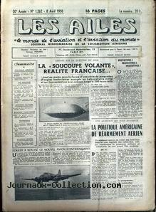

Les ailes de ce jour-là, titrant sur La "soucoupe volante", réalité française

À Kokomo (Indiana) Earl Baker est réveillé par son chien. Il observe
un disque métallique de 50 pieds de diamètre, 15 pieds de largeur, surplombé d'une "conning tower" et possèdant 3
ouvertures sur le bord émettant une lumière bleue. L'objet reste stationnaire durant 2 mn, puis s'envole Cas
Blue Book n° 706 non expliqué.
À River Road près d'Amarillo (Texas), David et Charles
Lightfoot (12 et 9 ans) voient 1 disque atterrir derrière une colline et allèrent le toucher. Il a la dimension d'un
pneumatique de voiture, environ 30 cm de haut, avec un dessus arrondi qui tourne et un pivot entre la base et le
sommet. Il décolleà très grande vitesse. Par la suite, le visage et les bras des enfants deviennent rouges.